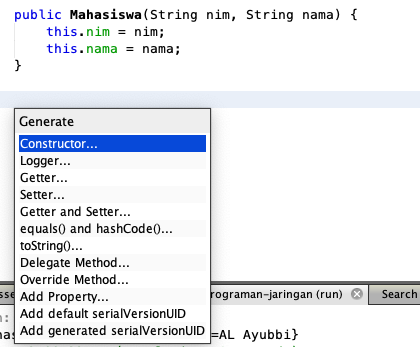
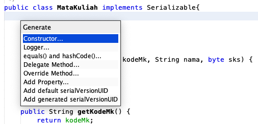

Menerapkan object persistence dengan menggunakan object serialization pada aplikasi
Petunjuk
Awali setiap sebelum membuat projek dengan berdoa.
Baca dan pahami tujuan, dasar teori, dan latihan-latihan modul dengan baik.
Kerjakan tugas-tugas projek dengan baik, sabar dan jujur
Ulasan Teori
Object Persistence
Object persistence adalah kemampuan sebuah object untuk tetap hidup dalam sebuah sistem, tidak terpengaruh waktu dan ruang (space), bahkan apabila aplikasi pembuat object tersebut telah dihentikan atau komputer dimatikan. Untuk itu objek yang diinginkan supaya persistence harus disimpan secara utuh.
Penyimpanan objek secara utuh melibatkan penyimpanan struktur data yang dimiliki oleh objek tersebut, nilai-nilai atribut yang dimilikinya, dan pemetaan terhadap referensi ke objek lain apabila ada, sekaligus objek yang direferensikannya. Proses itu merupakan sebuah proses yang kompleks dan rumit. Di bawah ini adalah salah satu mekanisme object persistence dalam sebuah stream.
Sumber https://www.geeksforgeeks.org/serialization-in-java/
Object Serialization
Object Serialization adalah teknik yang bisa mewujudkan object persistence. Teknik ini mengontrol bagaimana data yang berisi informasi-informasi nilai dan status sebuah objek (termasuk nilai atribut-atributnya, hak akses tiap atributnya baik itu public, protected atau private, dan lain sebagainya) dituliskan dan disimpan dalam bentuk rangkaian byte-byte data.
Objek yang diserialisasi nantinya dapat dikirimkan lewat jaringan, atau disimpan dalam file, untuk kemudian dapat diakses di lain waktu sesuai kebutuhan. Hal tersebut memungkinkan pindahnya suatu objek dari satu JVM ke JVM lain, entah dalam satu mesin atau mesin yang berbeda.
Cara Kerja Object Serialization
Setiap objek yang mengimplementasikan interface java.io.Serializable dapat diserialisasikan hanya dengan beberapa baris kode. Mengimplementasikannya sama dengan cara menerapkan interface-interface yang lain pada JAVA, yaitu dengan menambahkan keyword implement pada deklarasi class yang diinginkan dan menggunakan konstruktor tanpa argumen tambahan. Interface ini menunjukkan bahwa class yang kita buat dapat mendukung serialisasi objek. Tidak ada method tambahan yang perlu diimplementasikan pada class tersebut.
Contoh deklarasi class yang menerapkan interface tersebut :
publicclassSomeClassextendsSomeOtherClassimplementsjava.io.Serializable{
public class SomeClass()
}
}
...
}
Permasalahan pada Penggunaan Serialisasi
Terdapat beberapa masalah pada awal munculnya metode serialisasi. Contohnya apabila objek yang ingin kita serialisasi memiliki informasi rahasia / sensitif yang tidak patut kita ikutkan dalam serialisasi untuk disimpan dalam bentuk file ke media penyimpanan atau dikirimkan ke jaringan.
Apabila ada kasus seperti ini : kelas yang ingin kita serialisasi memiliki atribut password dimana bisa secara mudah dibaca apabila diserialisasikan. Untuk mencegah hal-hal tersebut, maka diciptakanlah keyword trancient. Keyword tersebut bisa diberikan pada deklarasi anggota / atribut dari kelas yang tidak kita inginkan untuk diikutkan pada proses serialisasi.
Contoh penggunaan trancient pada deklarasi kelas :
Attribut yang menggunakan modifier transient ketika proses serializable akan di-exclude, tidak ikut diserialisasi sehingga nilai dari attribut tersebut adalah null atau 0.
Selain menggunakan modifier transient, modifier static pada attribut juga dikenai serialisasi atau ketika sebuah object telah dilakukan write dapat diubah kembali attribut tersebut.
Object Deserialization
Deserialization merupakan kebalikan dari serialization, yaitu mengubah byte stream ke dalam sebuah object ke dalam memori.
Untuk melakukan serialization dan deserialization membutuhkan SerialVersionUID dalam setiap class yang akan dilakukan proses tersebut, fungsi SerialVersionUID adalah untuk memastikan bahwa object yang deserialization benar dan valid.
Ketika objectnya tidak sesuai maka akan mengakibatkan InvalidClassException.
SerialVersionUID sebaiknya secara implisit dibuat, walaupun secara explisit dibuatkan oleh runtime tetapi proses tersebut membutuhkan kalkulasi sehingga resource akan meningkat/bertambah.
Contoh:
privatestaticfinallong serialVersionUID=42L
Membaca dan Menuliskan Object pada Stream
Point utama dari serialisasi adalah bagaimana kita menuliskan objek ke stream dan bagaimana cara mendapatkannya kembali untuk bisa digunakan. Hal tersebut bisa dilakukan dengan menggunakan kelas java.io.ObjectOutputStream dan java.io.ObjectInputStream
Kelas ObjectInputStream
Digunakan untuk mengambil objek yang terserialisasi dari byte stream untuk dapat direkonstruksi ulang menjadi bentuk asli objek tersebut.
Kelas ObjectInputStream mengimplementasikan interface ObjectInput yang merupakan turunan dari interface DataInput. Artinya kelas ini menyediakan banyak method untuk beroperasi dengan banyak tipe data seperti halnya pada kelas DataInputStream.
Konstruktor
protected ObjectInputStream() – merupakan konstruktor default untuk turunan dari ObjectInputStream
ObjectInputStream(InputStream input) – membuat object input stream yang terkoneksi dengan input stream yang ditunjuk, dapat digunakan untuk mengembalikan objek yang terserialisasi
Method - method
public final Object readObject() – membaca objek yang terserialisasi dari stream dan merekonstruksinya kembali
Kelas ObjectOutputStream
Kelas ini digunakan untuk menserialisasi objek dan dikirimkan melalui byte stream dalam rangka object persistence. Bisa dihubungkan ke semua output stream seperti file output dan networking stream.
ObjectOutputStream(OutputStream output) – membuat objek output stream yang mampu menserialisasi objek dan dikirim melalui stream output yang ditunjuk
Method-method
void writeObject (Object object) – menuliskan objek yang dimaksud ke output stream melalui proses serialisasi.
Praktikum
Praktikum 1
Contoh penggunaan object serialization dapat dilihat pada kode aplikasi di awah ini, di mana aplikasi membuat objek yang dapat disimpan dan dipanggil kembali lengkap dengan informasi dan status terakhir (nilai-nilai atribut yang dimiliki) objek tersebut.
Buat class Mahasiswa seperti ditunjukkan pada kode di bawah ini
Class di atas digunakan untuk membuat sebuah object, yang nantinya akan disimpan ke dalam sebuah stream dan dilakukan pembacaan kembali object tersebut.
Untuk membuat method Getter, Setter, ToString() silakan memanfaatkan generate editor dengan Klik Kanan - Insert Code... kemudian pilih method yang akan di-genereate, misalkan Getter dan Setter yang dicontohkan pada gambar di bawah ini

Generate Getter dan Setter
Silakan jalankan program di atas, apa yang terjadi?
Tambahkan implements Serializable pada class Mahasiswa, selanjutnya jalankan kembali program yang telah dibuat sebelumnya.
Pertanyaan
Mengapa sebelumnya ketika program Anda dijalankan error?
Apa fungsi dari penambahan implements Serializable?
Tambahkan attribut jurusan, program studi, dan ipk pada class Mahasiswa
Praktikum 2
Pada praktikum yang kedua menerapkan kata kunci transient dan static pada sebuah attribut, untuk penggunaannya silakan ketik kode sebagai berikut
Khusus untuk membuat attribut serialVersionUID bisa juga dilakukan otomatis menggunakan editor Netbeans, caranya adalah install terlebih dahulu plugin serialVersionUID generator dengan cara sebagai berikut. Pilih menu Tools - Plugins sehingga muncul wizard seperti di bawah ini
Install plugin
Jika sudah berhasil, kemudian klik kanan pada class yang akan digenerate serialVersionUID seperti ditunjukkan pada gambar di bawah ini

Genereate serialVersionUID
Setelah menjalankan kode di atas, apakah perbedaan modifier transient dan static pada class yang meng-implements Serialize?
Apa yang dapat Anda simpulkan dengan praktikum 1 dan praktikum 2?
Tugas
Buatlah aplikasi CRUD sederhana seperti tampilan di atas dengan memanfaatkan teknik serialization dan deserialization, sehingga ketika sudah berhasil menyimpan data ketika aplikasi dijalankan kembali tidak hilang.